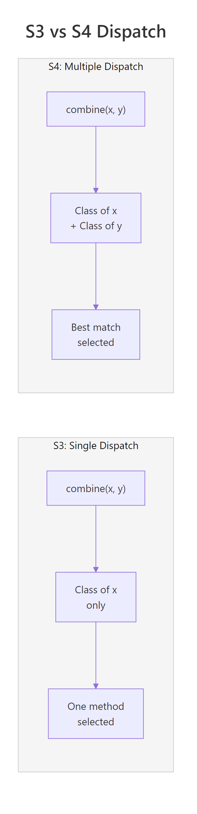
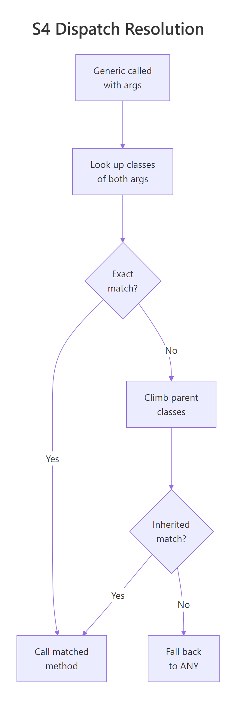
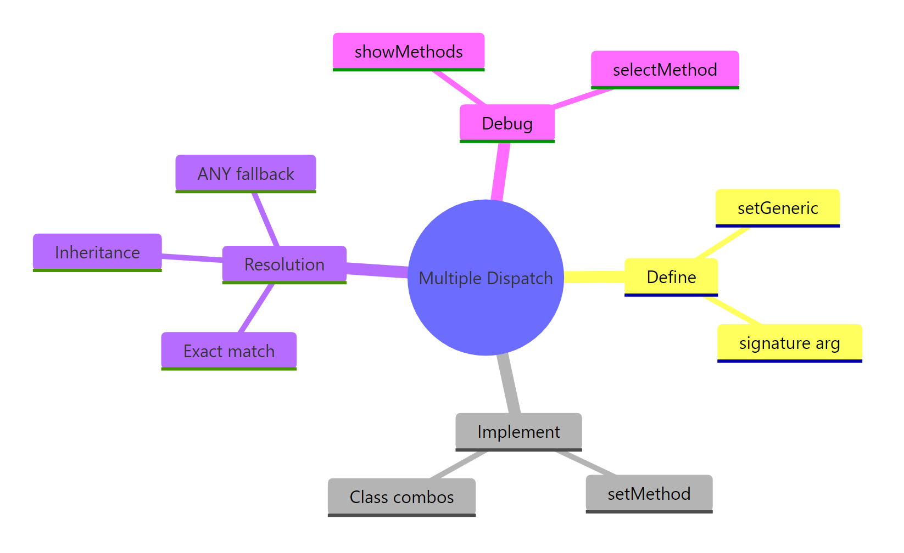

S4 Multiple Dispatch in R: Dispatch on Two Arguments Simultaneously
S4's multiple dispatch lets a single generic function choose different methods based on the classes of two or more arguments at once, something S3 cannot do. This is R's most powerful method-selection mechanism, used throughout Bioconductor and the Matrix package.
By Selva Prabhakaran · Published May 12, 2026 · Last updated May 12, 2026
How does S4 multiple dispatch differ from S3's single dispatch?
S3 dispatches on the class of the first argument only. If you call combine(x, y), S3 checks class(x) and ignores y entirely. S4 flips this limitation, it examines the classes of both arguments together and picks the method that best matches the combination. Let's see the difference in action.
RConvert generic with two argument signature
# Define two S4 classes for unit systemssetClass("Metric", slots =c(value ="numeric", unit ="character"))setClass("Imperial", slots =c(value ="numeric", unit ="character"))# A generic that dispatches on BOTH argumentssetGeneric("convert", function(from, to) standardGeneric("convert"), signature =c("from", "to"))# Method 1: Metric -> ImperialsetMethod("convert", c(from ="Metric", to ="Imperial"), function(from, to) {if (from@unit =="km"&& to@unit =="miles") {new("Imperial", value =round(from@value *0.6214, 2), unit ="miles") } else {paste("Convert", from@unit, "to", to@unit) }})# Method 2: Imperial -> Metric (different behavior!)setMethod("convert", c(from ="Imperial", to ="Metric"), function(from, to) {if (from@unit =="miles"&& to@unit =="km") {new("Metric", value =round(from@value *1.6093, 2), unit ="km") } else {paste("Convert", from@unit, "to", to@unit) }})# Test: the COMBINATION of argument classes determines the methodm1 <-new("Metric", value =10, unit ="km")i1 <-new("Imperial", value =0, unit ="miles")result1 <-convert(m1, i1) # Metric -> Imperialresult1@value#> [1] 6.21result2 <-convert(i1, m1) # Imperial -> Metric (different method!)result2@value#> [1] 0
Notice how convert(m1, i1) and convert(i1, m1) call completely different methods. R looked at the class of both arguments to decide. In S3, only the first argument would matter, you'd have no way to distinguish the direction of conversion.
Key Insight
Multiple dispatch selects methods based on argument combinations, not just the first argument. This means convert(Metric, Imperial) and convert(Imperial, Metric) can run entirely different code, a capability S3 simply doesn't have.

Figure 2: S3 dispatches on one argument; S4 dispatches on the combination of two.
Try it: Add a third method for the signature c("Metric", "Metric") that returns "Already in metric — no conversion needed!". Test it by calling convert(m1, m1).
RExercise: metric to metric method
# Try it: add a Metric-to-Metric method# setMethod("convert", c(from = "???", to = "???"), function(from, to) {# # your code here# })# Test:# convert(m1, m1)#> Expected: "Already in metric, no conversion needed!"
Click to reveal solution
RExercise solution
setMethod("convert", c(from ="Metric", to ="Metric"), function(from, to) {"Already in metric, no conversion needed!"})convert(m1, m1)#> [1] "Already in metric, no conversion needed!"
Explanation: The signature c("Metric", "Metric") matches when both arguments are Metric objects. R checks both classes and routes to this specific method.
How do you define a generic that dispatches on two arguments?
The key is the signature parameter in setGeneric(). It tells R which arguments participate in method dispatch. Arguments not listed in the signature are passed through to every method but never influence which method is chosen.
RInteract generic for cat and dog
# Create a generic that dispatches on x and y, but NOT on verbosesetGeneric("interact", function(x, y, verbose =FALSE) {standardGeneric("interact")}, signature =c("x", "y"))# Define a simple class pair to testsetClass("Cat", slots =c(name ="character"))setClass("Dog", slots =c(name ="character"))# Method for Cat + Dog interactionsetMethod("interact", c(x ="Cat", y ="Dog"), function(x, y, verbose =FALSE) { msg <-paste(x@name, "hisses at", y@name)if (verbose) paste(msg, "(Cat is not happy)")else msg})interact(new("Cat", name ="Whiskers"), new("Dog", name ="Rex"))#> [1] "Whiskers hisses at Rex"interact(new("Cat", name ="Whiskers"), new("Dog", name ="Rex"), verbose =TRUE)#> [1] "Whiskers hisses at Rex (Cat is not happy)"
Both calls route to the same method because verbose isn't in the signature, it doesn't affect dispatch. Only the classes of x and y matter.
If you omit the signature argument entirely, R defaults to dispatching on all formal arguments except .... That's usually fine for two-argument generics, but it can cause surprises when you have extra parameters you don't want in the dispatch.
RWarn on default signature
# Without explicit signature: ALL args (except ...) participate in dispatchsetGeneric("demo_dispatch", function(a, b, mode ="fast") {standardGeneric("demo_dispatch")})# Now 'mode' is part of the dispatch! You'd need to match its class too.# This is rarely what you want, explicit signatures are safer.
Tip
Keep signatures to two arguments maximum. Each dispatched argument multiplies the number of methods you need. Two classes across two arguments means 4 methods; three arguments with two classes each means 8. Combinatorial explosion gets painful fast.
Try it: Define a generic called merge_data() with arguments source, target, and method = "inner". Make it dispatch on source and target only, not on method.
RExercise: merge data source and target
# Try it: define merge_data with a two-arg signature# setGeneric("merge_data", function(source, target, method = "inner") {# # your code here# }, signature = ???)# Verify the signature:# merge_data#> Expected: standardGeneric with signature c("source", "target")
Click to reveal solution
RExercise solution
setGeneric("merge_data", function(source, target, method ="inner") {standardGeneric("merge_data")}, signature =c("source", "target"))merge_data#> standardGeneric for "merge_data" defined from package ".GlobalEnv"#> with signature c("source", "target")
Explanation: The signature = c("source", "target") tells R to use only those two arguments for dispatch. The method parameter passes through to all methods but never affects which method is called.
How do you write methods for specific argument combinations?
Once your generic has a two-argument signature, you register methods by specifying the class name for each position. Think of it as filling in cells of a grid, each cell is a unique class combination.
Each combination runs a completely different method body. The order matters, combine(TextData, NumericData) is a different cell from combine(NumericData, TextData).
You don't always need to fill every cell. The "ANY" pseudo-class acts as a wildcard, it matches any class in that argument position.
RANY fallback for text combine
# A fallback for ANY + TextDatasetMethod("combine", c("ANY", "TextData"), function(x, y) {paste("Unknown type combined with text:", y@content)})# Test with something unexpectedcombine(42, t1)#> [1] "Unknown type combined with text: hello"
The "missing" pseudo-class handles cases where an argument isn't supplied at all.
Method signatures are order-sensitive. The signature c("TextData", "NumericData") is a completely different method from c("NumericData", "TextData"). Swapping the argument order won't automatically find the reverse method, you must define both if you need both directions.
Try it: Add a method for combine() with signature c("NumericData", "missing") that returns a NumericData object with doubled values. Test it with combine(n1).
RExercise: numeric with missing second
# Try it: handle combine(NumericData) with no second argument# setMethod("combine", c("NumericData", "missing"), function(x, y) {# # your code here# })# Test:# combine(n1)@values#> Expected: 2 4 6
Explanation: The "missing" class matches when the second argument is absent. Inside the method, y isn't used, the method operates only on x.
What happens when no exact method matches?
When R can't find a method that exactly matches both argument classes, it doesn't give up immediately. Instead, it climbs the inheritance tree for each argument, looking for the closest inherited method. The method requiring the fewest total inheritance steps wins.
RInheritance distance chooses the method
# A class hierarchy: Shape is the parent, Circle and Square are childrensetClass("Shape", slots =c(color ="character"))setClass("Circle", contains ="Shape", slots =c(radius ="numeric"))setClass("Square", contains ="Shape", slots =c(side ="numeric"))# Generic for checking overlapsetGeneric("overlap", function(a, b) standardGeneric("overlap"), signature =c("a", "b"))# Only define a method for the parent combinationsetMethod("overlap", c("Shape", "Shape"), function(a, b) {"Generic shape overlap check"})# Test with child classesc1 <-new("Circle", color ="red", radius =5)s1 <-new("Square", color ="blue", side =4)overlap(c1, s1)#> [1] "Generic shape overlap check"
No method exists for (Circle, Square). R walks up: Circle inherits from Shape, Square inherits from Shape. The method (Shape, Shape) matches after one step per argument, two total steps. That's the closest match, so R uses it.
Now let's add a more specific method and see how dispatch changes.
RSpecialise circle over shape
# Add a specialized method for Circle + any ShapesetMethod("overlap", c("Circle", "Shape"), function(a, b) {paste("Circle (r =", a@radius, ") overlaps with a shape")})# Same call, different result!overlap(c1, s1)#> [1] "Circle (r = 5 ) overlaps with a shape"# Circle + Shape: 0 steps for first arg, 1 step for second = 1 total# Shape + Shape: 1 step for first arg, 1 step for second = 2 total# R picks the closer match: (Circle, Shape)
R always picks the method requiring the fewest total inheritance steps. In this case, (Circle, Shape) is closer than (Shape, Shape) because the first argument matches exactly (0 steps) while only the second needs one step.

Figure 1: How S4 selects a method based on two argument classes.
Key Insight
R picks the method requiring the fewest total inheritance steps across all arguments. An exact match on one argument plus one inheritance step on the other (1 total) beats one step on each argument (2 total). Think of it like "total distance", closer is better.
Try it: Without running the code, predict which method overlap(s1, c1) will call, (Shape, Shape) or (Circle, Shape)? Then verify your prediction.
RExercise: dispatch on circle and shape
# Try it: predict which method handles overlap(Square, Circle)# Think about inheritance steps before running!# overlap(s1, c1)#> Expected: ???
Explanation:s1 is a Square (child of Shape), and c1 is a Circle (child of Shape). The (Circle, Shape) method needs the first arg to be a Circle, but s1 is a Square, no match even via inheritance. So R falls back to (Shape, Shape) which matches after 1 step per argument. Argument order matters in dispatch!
How do you inspect and debug S4 dispatch?
S4 provides several introspection functions that tell you exactly what's happening under the hood. These are essential when your dispatch isn't behaving as expected.
showMethods() lists all registered methods for a generic.
selectMethod() is the most useful debugging tool, it reveals exactly which method R would call for a given class combination, including inherited methods.
RRetrieve a method with selectMethod
# What method handles Circle + Square?selectMethod("overlap", c("Circle", "Square"))#> Method Definition (Class "derivedDefaultMethod"):#> function (a, b)#> paste("Circle (r =", a@radius, ") overlaps with a shape")#>#> Signatures:#> a b#> target "Circle" "Shape"#> defined "Circle" "Shape"
This tells you the (Circle, Shape) method handles the (Circle, Square) call, even though no (Circle, Square) method was directly defined.
existsMethod() and hasMethod() check whether a method exists. The difference: existsMethod() checks for directly defined methods only, while hasMethod() includes inherited methods.
RCheck existence with existsMethod and hasMethod
# Is there a DIRECT method for (Circle, Square)?existsMethod("overlap", c("Circle", "Square"))#> [1] FALSE# Is there an INHERITED method for (Circle, Square)?hasMethod("overlap", c("Circle", "Square"))#> [1] TRUE
findMethod() locates where a directly defined method lives in the search path.
Use selectMethod() as your go-to debugging tool. It shows the method R will actually call, including inherited methods, rather than just directly defined ones. When dispatch behaves unexpectedly, selectMethod() is your first stop.
Try it: Use showMethods() to list all methods for the convert generic you defined in the first section.
RExercise: inspect convert methods
# Try it: inspect the convert generic# showMethods("convert")#> Expected: shows methods for Metric/Imperial combinations
Explanation:showMethods() lists every directly registered method. You can see all three methods from Section 1, including the Metric-to-Metric method from the exercise.
When should you use multiple dispatch in practice?
Multiple dispatch shines whenever the correct behavior depends on the combination of input types, not just one of them. Three patterns come up repeatedly.
Pattern 1: Arithmetic on custom types. When you overload +, -, or other operators, the result depends on what's on both sides of the operator.
The + operator dispatches on bothe1 and e2. Adding Money to Money checks currencies and sums amounts. Adding Money to a plain number just adds the value. Without multiple dispatch, you'd need clunky if-else chains inside a single method.
Pattern 2: Data structure interactions. In Bioconductor, S4 classes like GRanges, DataFrame, and RleList interact through generics such as combine(), merge(), and findOverlaps(). The behavior varies by the combination of inputs.
The same generic handles two completely different operations based on whether the second argument is another GeneList or a plain character vector.
Note
Bioconductor uses S4 extensively. Over half of Bioconductor packages rely on S4 classes and multiple dispatch. If you work in genomics, proteomics, or bioinformatics, mastering S4 dispatch is essential for using and extending packages like GenomicRanges, SummarizedExperiment, and IRanges.
Try it: Add a method for + with signature c("numeric", "Money") to make addition commutative. Test that 5 + wallet works the same as wallet + 5.
Explanation: Without this method, 5 + wallet would fail because R has no method for (numeric, Money). You must explicitly handle both argument orders, multiple dispatch doesn't assume commutativity.
How does dispatch resolution handle ambiguity?
Ambiguity arises when two methods are equally "close" to the target classes, they require the same number of total inheritance steps. R selects one but raises a warning, because the choice is arbitrary.
RAmbiguity from multiple inheritance
# Two parent classessetClass("Printable", slots =c(label ="character"))setClass("Saveable", slots =c(path ="character"))# A child inheriting from both (multiple inheritance)setClass("Document", contains =c("Printable", "Saveable"))setGeneric("process", function(x, y) standardGeneric("process"), signature =c("x", "y"))# Method for (Printable, Saveable): 1 step for x, 1 step for y = 2 totalsetMethod("process", c("Printable", "Saveable"), function(x, y) {"Route A: print then save"})# Method for (Saveable, Printable): also 1+1 = 2 totalsetMethod("process", c("Saveable", "Printable"), function(x, y) {"Route B: save then print"})doc1 <-new("Document", label ="Report", path ="/tmp/report")doc2 <-new("Document", label ="Invoice", path ="/tmp/invoice")# This triggers an ambiguity warning!process(doc1, doc2)#> Note: method with signature 'Printable#Saveable' chosen for#> function 'process', target signature 'Document#Document'.#> "Saveable#Printable" would also be valid#> [1] "Route A: print then save"
R picks one (alphabetical order of class names breaks ties), but the warning tells you this is fragile. The fix is simple: define an explicit method for the ambiguous combination.
RResolve by specialising both arguments
# Resolve: add explicit method for (Document, Document)setMethod("process", c("Document", "Document"), function(x, y) {"Route C: document-specific processing"})# No more warningprocess(doc1, doc2)#> [1] "Route C: document-specific processing"
Now R has an exact match at 0 total steps, no ambiguity. Whenever you see an ambiguity warning during development, add the explicit method immediately rather than hoping the arbitrary choice is correct.
Warning
Ambiguity warnings are silent bugs waiting to happen. R picks a method but the choice is arbitrary. If the "wrong" method runs, you'll get incorrect results with no error. Always resolve ambiguities by defining an explicit method for the conflicting signature.
Try it: Use selectMethod() to confirm that process(doc1, doc2) now resolves to the (Document, Document) method without any ambiguity.
RExercise: select document by document method
# Try it: verify the resolved dispatch# selectMethod("process", c("Document", "Document"))#> Expected: shows the Document#Document method
Click to reveal solution
RExercise solution
selectMethod("process", c("Document", "Document"))#> Method Definition (Class "derivedDefaultMethod"):#> function (x, y)#> "Route C: document-specific processing"#>#> Signatures:#> x y#> target "Document" "Document"#> defined "Document" "Document"
Explanation: The target and defined signatures match perfectly, (Document, Document). No inheritance climbing needed, no ambiguity.
Practice Exercises
Exercise 1: Build a format dispatcher
Create a multiple-dispatch system for formatting data. Define two classes: MatrixData (with a slot mat of type "matrix") and DataFrameData (with a slot df of type "data.frame"). Define a generic format_output() dispatching on (data, style) where style is one of two classes: CSVStyle (with a slot delimiter) and JSONStyle (with a slot pretty of type "logical"). Write 4 methods that return a descriptive string of the format being used. Test all 4 combinations.
RPractice one: format matrix and data frame outputs
# Exercise 1: format_output() dispatcher# Hint: define 4 classes, 1 generic, and 4 methods# Write your code below:
Explanation: The 2x2 grid of data type x output style gives 4 distinct methods. Each combination can contain completely different formatting logic.
Exercise 2: Vehicle towing system with inheritance
Create a class hierarchy: Vehicle (parent, with slot weight), Car (child), and Truck (child with slot tow_capacity). Also create Cargo (parent, slot weight) and HeavyCargo (child). Define a generic can_tow() dispatching on (vehicle, cargo). Write three methods:
(Car, ANY) returns "Cars cannot tow"
(Truck, Cargo) returns "Truck can tow this cargo" if truck's tow_capacity exceeds cargo's weight
(Truck, HeavyCargo) always returns "Need a specialized heavy hauler"
Test with different combinations and verify dispatch using selectMethod().
RPractice two: truck towing hierarchy
# Exercise 2: vehicle towing with inheritance# Hint: HeavyCargo inherits from Cargo, so the (Truck, HeavyCargo) method# should be more specific than (Truck, Cargo)# Write your code below:
Click to reveal solution
RPractice two solution
setClass("Vehicle", slots =c(weight ="numeric"))setClass("Car", contains ="Vehicle")setClass("Truck", contains ="Vehicle", slots =c(tow_capacity ="numeric"))setClass("Cargo", slots =c(weight ="numeric"))setClass("HeavyCargo", contains ="Cargo")setGeneric("can_tow", function(vehicle, cargo) standardGeneric("can_tow"), signature =c("vehicle", "cargo"))setMethod("can_tow", c("Car", "ANY"), function(vehicle, cargo) {"Cars cannot tow"})setMethod("can_tow", c("Truck", "Cargo"), function(vehicle, cargo) {if (vehicle@tow_capacity > cargo@weight) "Truck can tow this cargo"else"Cargo exceeds tow capacity"})setMethod("can_tow", c("Truck", "HeavyCargo"), function(vehicle, cargo) {"Need a specialized heavy hauler"})my_car <-new("Car", weight =1500)my_truck <-new("Truck", weight =5000, tow_capacity =3000)light <-new("Cargo", weight =500)heavy <-new("HeavyCargo", weight =10000)can_tow(my_car, light)#> [1] "Cars cannot tow"can_tow(my_truck, light)#> [1] "Truck can tow this cargo"can_tow(my_truck, heavy)#> [1] "Need a specialized heavy hauler"# Verify dispatchselectMethod("can_tow", c("Truck", "HeavyCargo"))#> Shows the (Truck, HeavyCargo) method directly
Explanation: HeavyCargo inherits from Cargo, so both (Truck, Cargo) and (Truck, HeavyCargo) could match. R picks (Truck, HeavyCargo) because it's an exact match (0 steps) versus (Truck, Cargo) which requires 1 inheritance step for the second argument.
Exercise 3: Create and resolve an ambiguity
Intentionally create an ambiguous dispatch scenario:
Define classes Alpha and Beta, and AlphaBeta that inherits from both
Define a generic resolve() dispatching on (x, y)
Define methods for (Alpha, Beta) and (Beta, Alpha)
Call resolve(ab, ab) where ab is an AlphaBeta object, observe the warning
Fix the ambiguity by adding a method for (AlphaBeta, AlphaBeta)
Use showMethods() and selectMethod() to verify the fix
RPractice three: resolve alpha beta ambiguity
# Exercise 3: ambiguity creation and resolution# Hint: AlphaBeta inherits from both Alpha and Beta,# so (Alpha, Beta) and (Beta, Alpha) are equidistant# Write your code below:
Click to reveal solution
RPractice three solution
setClass("Alpha", slots =c(a ="numeric"))setClass("Beta", slots =c(b ="numeric"))setClass("AlphaBeta", contains =c("Alpha", "Beta"))setGeneric("resolve", function(x, y) standardGeneric("resolve"), signature =c("x", "y"))setMethod("resolve", c("Alpha", "Beta"), function(x, y) "Alpha-Beta path")setMethod("resolve", c("Beta", "Alpha"), function(x, y) "Beta-Alpha path")ab <-new("AlphaBeta", a =1, b =2)# This warns about ambiguity:resolve(ab, ab)#> Note: method with signature 'Alpha#Beta' chosen...#> "Beta#Alpha" would also be valid#> [1] "Alpha-Beta path"# Fix: add explicit methodsetMethod("resolve", c("AlphaBeta", "AlphaBeta"), function(x, y) "AlphaBeta direct path")resolve(ab, ab)#> [1] "AlphaBeta direct path"showMethods("resolve")selectMethod("resolve", c("AlphaBeta", "AlphaBeta"))#> Shows the direct (AlphaBeta, AlphaBeta) method
Explanation: With multiple inheritance, both parents are equidistant (1 step each). The explicit (AlphaBeta, AlphaBeta) method at 0 steps removes all ambiguity.
Putting It All Together
Let's build a complete measurement unit system that demonstrates every concept from this tutorial: class definition, generic creation, multiple dispatch methods, inheritance, dispatch debugging, and ambiguity handling.
REnd-to-end measurement hierarchy
# === Complete Example: Measurement Unit System ===# 1. Define a class hierarchysetClass("Measurement", slots =c(value ="numeric", unit ="character"))setClass("Length", contains ="Measurement")setClass("Weight", contains ="Measurement")setClass("MetricLength", contains ="Length")setClass("ImperialLength", contains ="Length")# 2. Define a multi-dispatch genericsetGeneric("add_measurement", function(x, y) standardGeneric("add_measurement"), signature =c("x", "y"))# 3. Same-type addition (exact matches)setMethod("add_measurement", c("MetricLength", "MetricLength"), function(x, y) {new("MetricLength", value = x@value + y@value, unit = x@unit)})setMethod("add_measurement", c("ImperialLength", "ImperialLength"), function(x, y) {new("ImperialLength", value = x@value + y@value, unit = x@unit)})# 4. Cross-type addition with automatic conversionsetMethod("add_measurement", c("MetricLength", "ImperialLength"), function(x, y) { y_meters <- y@value *0.3048# feet to metersnew("MetricLength", value =round(x@value + y_meters, 2), unit ="m")})setMethod("add_measurement", c("ImperialLength", "MetricLength"), function(x, y) { y_feet <- y@value *3.2808# meters to feetnew("ImperialLength", value =round(x@value + y_feet, 2), unit ="ft")})# 5. Fallback: incompatible typessetMethod("add_measurement", c("Length", "Weight"), function(x, y) {stop("Cannot add length and weight measurements")})setMethod("add_measurement", c("Weight", "Length"), function(x, y) {stop("Cannot add weight and length measurements")})# 6. Scalar multiplication via ANYsetMethod("add_measurement", c("MetricLength", "ANY"), function(x, y) {if (is.numeric(y)) new("MetricLength", value = x@value * y, unit = x@unit)elsestop("Unsupported type for measurement operation")})# === Test the system ===beam_a <-new("MetricLength", value =2.5, unit ="m")beam_b <-new("MetricLength", value =1.8, unit ="m")plank <-new("ImperialLength", value =6, unit ="ft")cargo <-new("Weight", value =50, unit ="kg")# Same-type: Metric + Metrictotal_metric <-add_measurement(beam_a, beam_b)cat("Metric + Metric:", total_metric@value, total_metric@unit, "\n")#> Metric + Metric: 4.3 m# Cross-type: Metric + Imperial (auto-converts)mixed <-add_measurement(beam_a, plank)cat("Metric + Imperial:", mixed@value, mixed@unit, "\n")#> Metric + Imperial: 4.33 m# Scalar multiplication via ANY fallbackdoubled <-add_measurement(beam_a, 3)cat("Metric * 3:", doubled@value, doubled@unit, "\n")#> Metric * 3: 7.5 m# Debug dispatchcat("\n--- Dispatch debugging ---\n")selectMethod("add_measurement", c("MetricLength", "ImperialLength"))#> Method for (MetricLength, ImperialLength) - direct matchhasMethod("add_measurement", c("MetricLength", "Weight"))#> [1] TRUE (inherited from Length, Weight)
This system handles four scenarios through multiple dispatch: same-type addition, cross-type conversion, incompatible-type errors, and scalar operations. Each scenario runs a different method body, all through a single add_measurement() generic.
Summary
Concept
Key Function
What It Does
Define a generic
setGeneric(f, signature = c("x", "y"))
Creates a function that dispatches on two arguments
Register a method
setMethod(f, c("ClassA", "ClassB"), ...)
Binds behavior to a specific class combination
Wildcard match
"ANY" in signature
Matches any class in that position
Missing argument
"missing" in signature
Matches when argument is not supplied
List methods
showMethods("generic")
Shows all registered methods
Debug dispatch
selectMethod("generic", c("A", "B"))
Reveals the method R would actually call
Check existence
existsMethod() / hasMethod()
Direct-only vs. including inherited methods
Resolve ambiguity
Add an explicit method
Eliminates arbitrary choice from equal-distance methods

Figure 3: Key components of S4 multiple dispatch.
Key takeaways:
S4 multiple dispatch selects methods based on the combination of argument classes, not just the first argument
The signature parameter in setGeneric() controls which arguments participate in dispatch
R resolves inherited methods by minimising total inheritance steps across all arguments
Ambiguity warnings mean two methods are equidistant, always resolve with an explicit method
Use selectMethod() to see exactly which method R will call for any class combination
Keep signatures to two arguments to avoid combinatorial explosion
References
Wickham, H., Advanced R, 2nd Edition. Chapter 15: S4. Link
R Core Team, Writing R Extensions: Methods and Classes. Link